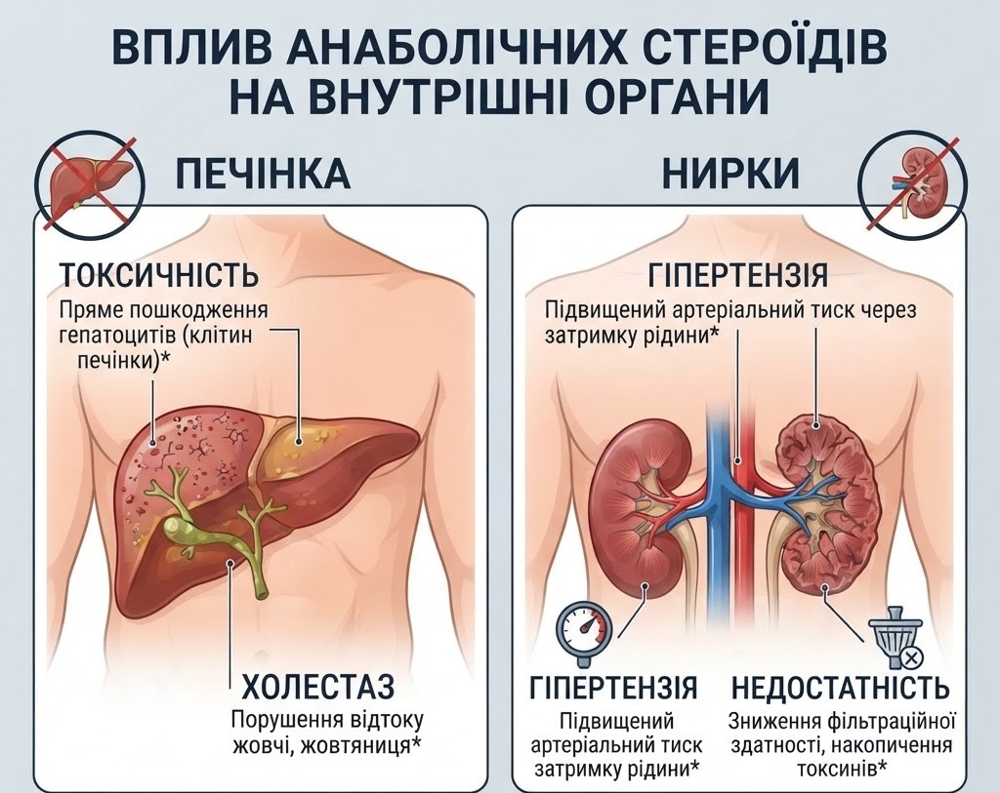

Печінка та нирки
Оральні форми синтетичних стероїдів є критично токсичними для клітин печінки, а надмірна набрана маса тіла створює фатальну загрозу виникнення хронічної ниркової недостатності.
Оральні форми синтетичних стероїдів є критично токсичними для клітин печінки, а надмірна набрана маса тіла створює фатальну загрозу виникнення хронічної ниркової недостатності.
